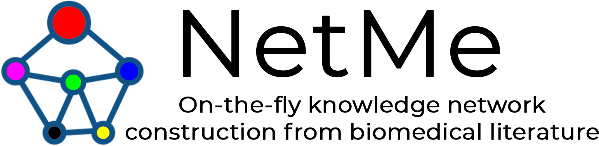

<mat-toolbar color="'primary'">
    <div class="container" style="display: flex; align-items: center; padding: 0;">
        <a class="navbar-brand" [routerLink]="'/'"></a>
        <div style="margin-left: 60px; display: flex; font-size: 14px; height: 42px;" fxHide.lt-md>
            <a class="nav-link" [routerLink]="'/latest'" [routerLinkActive]="['active']">Your latest networks</a>
            <a class="nav-link" [routerLink]="'/how-it-works'" [routerLinkActive]="['active']">How it works</a>
            <a class="nav-link" [routerLink]="'/about-us'" [routerLinkActive]="['active']">About NetMe</a>
            <a class="nav-link" href="https://link.springer.com/chapter/10.1007/978-3-030-65351-4_31">Publications</a>
        </div>
        <button mat-icon-button fxHide.gt-md style="margin-left: auto;" (click)="menuOpen = !menuOpen;">
            <div class="m-icon" style="background-image: url(../../assets/img/menu.svg); margin: auto;"></div>
        </button>
    </div>
</mat-toolbar>
<div *ngIf="menuOpen" style="background-color: #ededed;">
    <mat-selection-list [multiple]="false">
        <mat-list-option>
            <a class="nav-link-m" [routerLink]="'/latest'" [routerLinkActive]="['active-m']">Your latest networks</a>
        </mat-list-option>
        <mat-list-option>
            <a class="nav-link-m" [routerLink]="'/how-it-works'" [routerLinkActive]="['active-m']">How it works</a>
        </mat-list-option>
        <mat-list-option><a class="nav-link-m" [routerLink]="'/about-us'" [routerLinkActive]="['active-m']">About
                NetMe</a>
        </mat-list-option>
        <mat-list-option>
            <a class="nav-link-m" href="https://link.springer.com/chapter/10.1007/978-3-030-65351-4_31">Publications</a>
        </mat-list-option>
    </mat-selection-list>
</div>